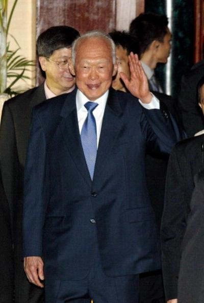

Brief History of Singapore
Former Prime Minister Lee Kuan Yew
© AFP/Getty Images, 2003FEER had covered Singapore since the British crown colony achieved independence in 1959. Lee Kuan Yew, who guided Singapore to independence, became its first prime minister. The island briefly confederated with Malaysia, but went its own way in 1965. Lee Kuan Yew and his moderate People’s Action Party (PAP) soon consolidated their hold on government. While a nominal democracy, in the four general elections between 1968 and 1980 PAP won all the seats in parliament. However, Lee set the country on a course of turbo-powered economic growth. His business-friendly policies aimed at maximizing Singapore’s location at the nexus of important sea routes, and at converting it into a hub of information, investment, manufacturing, and trade.
Lee’s policies were spectacularly successful. In a generation, Singapore transformed itself from a resourceless backwater to a major financial center; by the 1980s, its per capita income was second in East Asia only to Japan’s.[4] Its social and legal policies were equally distinctive, though less applauded: The city-state dealt harshly with corruption, crime, and social misbehavior. In 1994, the government famously sentenced an American to caning for spray-painting cars.
Asian values. Singapore’s leaders often cited its Confucian foundations as justification for strict social control. The country was unusual in its ardent desire to cultivate a Western-style free economic market while maintaining a communitarian political philosophy. The leadership decried, for example, the West’s emphasis on individual rights as egotistical and morally corrosive. They emphasized “rowing as a team,” echoing the Confucian view of humans as interdependent, social beings who “are who they are not simply because they have worked hard or are talented, but because others have helped them.”[5] In politics, the Confucian influence was evident in the ideal of the leader not as a politician pandering to public opinion, but as an “exemplary person,” an enlightened, far-sighted helmsman who, holding power as a public trust, steered the body politic in the correct—rather than the momentarily expedient—direction.[6] Singaporean officials aspired to be leaders and resented the title “politician.”
In the official Singaporean view, the West was decadent and corrupt because it followed the cult of individuality to its logical and destructive conclusion, resulting in a proliferation of crime and vice, corruption, and profligacy. Singapore hoped to keep these out through legislation and aggressive prosecution of offenders. When it came to the media, Singapore thus banned not only the overtly lascivious—Penthouse, for example—but even the seemingly benign, like Cosmopolitan magazine and the Beatles song “Happiness is a Warm Gun.” “Outwardly we are westernized. But the way we do things does not fit neatly into [the Western conception] of what a modern state should be,” Prime Minister Goh Chok Tong explained at the anniversary of the Singapore Straits Times in 1995. “Nor, I suspect, have they quite accepted the fact that while many societies aspire to enjoy the material well-being of the West, not every society wishes to share the cultural and societal norms and values prevailing in the West today.”[7]
Western critics rejected the “Asian values” argument as a not-so-subtle justification for suppressing dissent. Economic prosperity, they charged, had come at the expense of civil liberties. They labeled Lee’s decades-long paternalistic, one-party rule soft authoritarianism.[8] “Lee Kuan Yew,” says Hong Kong University Associate Professor (and former FEER editor) David Plott, “is tough, ruthless, brutal toward his political enemies.”[9] He adds:
[He] shows no mercy and that’s widely understood. But the compact he has with the people of Singapore is to deliver good government, prosperity, a stable, secure, safe society. That’s the bargain. People are willing to give up certain freedoms in return for what the government delivers... To put it bluntly, Lee Kuan Yew just doesn’t like criticism of him or the PAP, and he uses the Singaporean legal system to muzzle the press.
Ethnic diversity. Singapore’s officials also often invoked the threat of ethnic violence as reason for a firm hand. During the 1980s, it was common for them to marvel publicly at the nation’s ethnic kaleidoscope while simultaneously warning that its fragile composition could be instantaneously shattered. Created as a trading outpost for the British East India Company, Singapore was indeed Southeast Asia’s melting pot, attracting immigrants seeking economic opportunity. It had a large Chinese majority, subdivided by the immigrants’ province of origin; there were also significant minorities of Malays, Indians, Tamils, and Eurasians. As a result, Singapore operated in four languages—Mandarin, Malay, Tamil, and English—though English was the lingua franca of business and government. For most of its existence, Singapore was also fragmented along religious lines, with Christianity, Buddhism, Taoism, Hinduism, and Islam all significantly represented.[10]
Not surprisingly, this had proven for a while a volatile mix. Throughout the 1950s and 60s, Singapore erupted in race riots that killed scores and injured hundreds. By advocating a policy of coexistence and “multi-racialism,” and stressing an overarching Singaporean identity, the government largely succeeded in defusing ethnic tensions. The country’s economic boom reinforced this calming trend.[11]
In 1990, Goh Chok Tong became prime minister, though Lee Kuan Yew remained active behind the scenes under a newly-minted title of “senior minister.” Goh served until 2004, when he was succeeded by Lee Kuan Yew’s eldest son, Lee Hsien Loong. Goh remained in government as the new senior minister, and the government created a new title for Lee Kuan Yew: minister mentor. He continued to play a role in Singaporean politics as a cabinet member and chair of a powerful government investment corporation. Many observers felt that Lee Kuan Yew remained the power behind the throne.
Footnotes
[4] See Alex Josey, Lee Kuan Yew, 2 vol. (1971–74, reprinted 1980); T.J.S. George, Lee Kuan Yew’s Singapore (1973); James Minchin, No Man Is an Island (1986).
[5] Satsuki Kawano, Ritual Practice in Modern Japan (Honolulu: University of Hawaii Press, 2005), p. 25.
[6] Joel Kupperman, Classic Asian Philosophy: A Guide to the Essential Texts (Oxford: Oxford University Press, 2001), p. 64.
[7] Goh Chok Tong, “The Singapore Press: Part of the Virtuous Cycle of Good Government and Good Society.” July 15, 1995.
[8] From 2002-2007, Freedom House classified Singapore as “partly free.”
[9] David Plott, telephone interview with Kirsten Lundberg, September 19, 2007. All further quotes from Plott, unless otherwise attributed, are from this interview. Plott, the former editor of FEER, was in 2007 deputy director of the Journalism and Media Studies Centre at Hong Kong University.
[10] State Department Background Notes, Bureau of East Asian and Pacific Affairs, April 2007.
[11] In a 2000 telephone poll, 70 percent of Singaporeans rated ethnic relations as “better today than they were 10 years ago.” Eighty-three percent said a race riot was unlikely to erupt in the next decade. Diane K. Mauzy and R.S. Milne, Singapore Politics Under the People’s Action Party (London; New York: Routledge, 2002), p. 113.